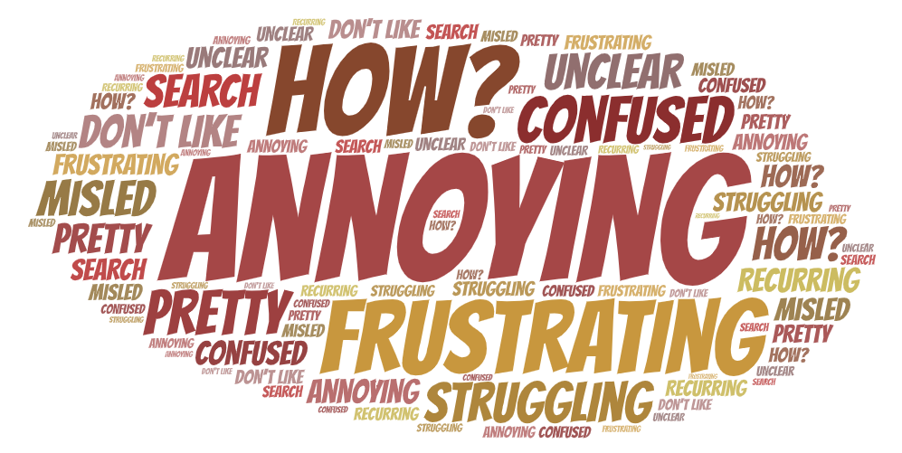

A case study analysis for a professional UX research project to evaluate the UX of a bicycle rentals company website. The objective was to gather and measure different types of user data and ideate potential solutions.
Responsibilities involved collecting user data, empathizing with users to identify pain points and usability issues, comparing and analyzing results, problem-solving, design thinking, and presenting key findings.
City Cycles is a bike rental shop in the downtown area of Riverside. Providing bike rentals allows customers to enjoy the experience of bike riding, reduce their carbon footprint by biking instead of driving for travel, and it provides convenience to explore the downtown area.
Customers don’t like to use the online reservation process on the City Cycles website and instead call in or come by the shop in-person to book their reservations. Unfortunately, this has created a high number of phone calls and drop-ins, making it difficult for City Cycles to provide quality customer service and causing an inconvenience for others who are trying to book bike rentals.
They aren’t sure why people aren’t booking online but they’d prefer more online reservations. City Cycles needed help evaluating the UX of their existing website to uncover reasons why their patrons aren’t using the website to book bike rentals.
An introduction to the history behind the field of UX, understanding its evolution, exploring the 5 Planes of UX: Strategy, Scope, Structure, Skeleton, and Surface, and an overview of data collection methods laid a foundation to formulate a comprehensive user testing plan. The 5-Step Design Thinking methodology is utilized: Empathize > Define > Ideate > Prototype > Test.
Planning for a successful UX research project meant selecting the required parameters for it in respect to what kind of experience the user needed, wanted, and expected. I had to identify target users and problems they might be facing, collect and analyze data through various industry standard UX research methods, and connect the data to user problems to prioritize.
In order to help find potential solutions to these problems for City Cycles and their users, I performed various types of UX research and data collection techniques, including user survey questionnaire creation, interpretation and review of website analytics, user interviewing and observation, data visualization, and other testing, analysis tools, and ideation methods.
The information gathered gave me insight into the users' problems and needs, and allowed me to empathize with City Cycles’ users so that I could understand their pain points in order to best advocate for their needs.
From a combination of heatmapping data, user interviews, and website analytics data, which included: weekly traffic, regional/language demographics, site visitors, bounce rate, etc., I was able to create a valid user persona & corresponding journey map to define user pain points. To better understand the issue and to identify the client’s priorities, I also conducted SWOT & Competitive Analyses on the City Cycles' business niche.

Aside from charts, graphs, and maps, another common way to explain complex data at a glance is by putting it into a world cloud, visually communicating qualitative data. The word cloud displays the most common words and feelings mentioned by City Cycles users while making online reservations.
Throughout the UX research process for City Cycles, I faced some challenges and obstacles. Luckily, I was able to use problem-solving skills to overcome any setbacks along the way, form a hypothesis, and continue working towards ideas and solutions.
The biggest challenge I faced while conducting UX research was identifying exactly what was preventing users from completing the reservation process through the City Cycles website and why this was preventing them from returning to the website.
I was able to overcome these challenges by using the defined problem statement as a basis for brainstorming solutions, by empathizing with the user, inductive and deductive reasoning, interpreting data, and design thinking methodology.
Thinking back to the original problem statement, through structured brainstorming I experimented with different methods for design ideation. I explored divergent thinking to generate ideas and solutions through rough sketches using the Matrix Method, focusing on specific subsets of the problem, then mashing up the matrix ideas to create new concepts.
After brainstorming and ideation, convergent thinking was needed to find patterns and similarities among the ideas gathered, then group the ideas based upon those trends, and finally refine and narrow my main focus. Based on the gathered user data, I had to assess what needed to change, what could be implemented, and prioritize those needs accordingly.
After performing research, collecting data, reviewing it for context, and analyzing the results, I found that users are frustrated with the City Cycles online reservation process and they are confused trying to navigate the site in general, witch they said was unclear. Two customers stated they always call to reserve because it’s the only real way to know they have a reservation, and another user said they felt misled. The data showed that users were relying heavily on the search bar to navigate rather than primary site navigation and the link to the phone number was the link with the highest traffic. Users overwhelmingly prefer to call in or drop by the shop, rather than struggle trying to figure out the reservation feature on the website.
City Cycles website analytics showed a consistent decrease in online bike rentals over the course of a year, and revealed that 85% of users were immediately leaving the site after clicking the “Make a Reservation” link - a much higher rate than any other page on the site. Site users expressed annoyance when their unused default email program unexpectedly opened up for a back and forth email reservation process, and closed out of it to instead call the shop.
One of the most interesting takeaways from the City Cycles UX research process was that most users visiting the site are unique, first-time visitors. Data shows 74.2% are new site visitors, while 25.8% are returning visitors. Since most of them never return to the site after the first visit, a negative experience may be preventing them from returning and may be a contributing factor to City Cycles declining online reservations, and even losing potential customers to competitors.
The existing frequent users want a recurring bike reservation feature on the site so that they can reserve bikes for more than one day, and the convenience to keep them overnight so they wouldn’t have to go through the reservation process every day. They also want the ability to set up reservations online in advance and manage them that way.
Most of City Cycles users prefer bicycling because they enjoy the outdoors and are interested in exploring the downtown area, they dislike traffic-congested commutes and road construction delays, and want to reduce their carbon footprint and consider biking to be a more eco-friendly way to travel or commute.
Based on the UX research data, I recommend that City Cycles modify their homepage, including the navigation menu and reservation button, to clarify their message and purpose for users visiting their site. The reservation process needs to be improved so that it’s easier to use and more efficient, offering users a positive experience, so they will opt to reserve online instead of calling in, and will even want to return as a customer. The online feature should offer convenience for the customer to obtain a bike rental.
As a continuation of this UX research project, my focus will shift into the realms of design, utilizing the tools, skills and fundamentals of information architectture, digital prototyping, wireframing, usability and universal design to create a high fidelity clickable prototype of a redesigned, UX-friendly City Cycles website.
View the expanded City Cycles UX Design Case Study.